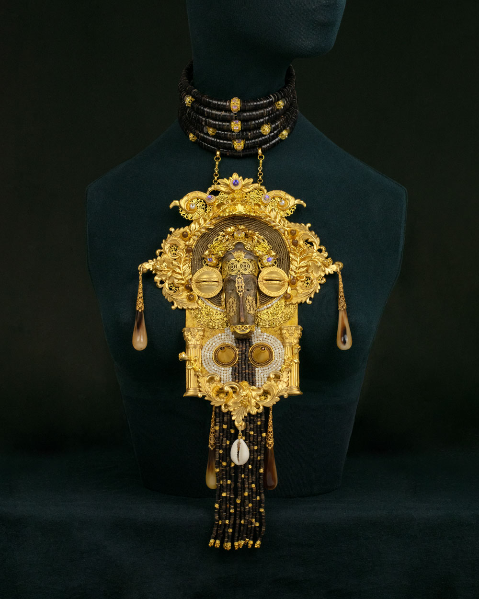
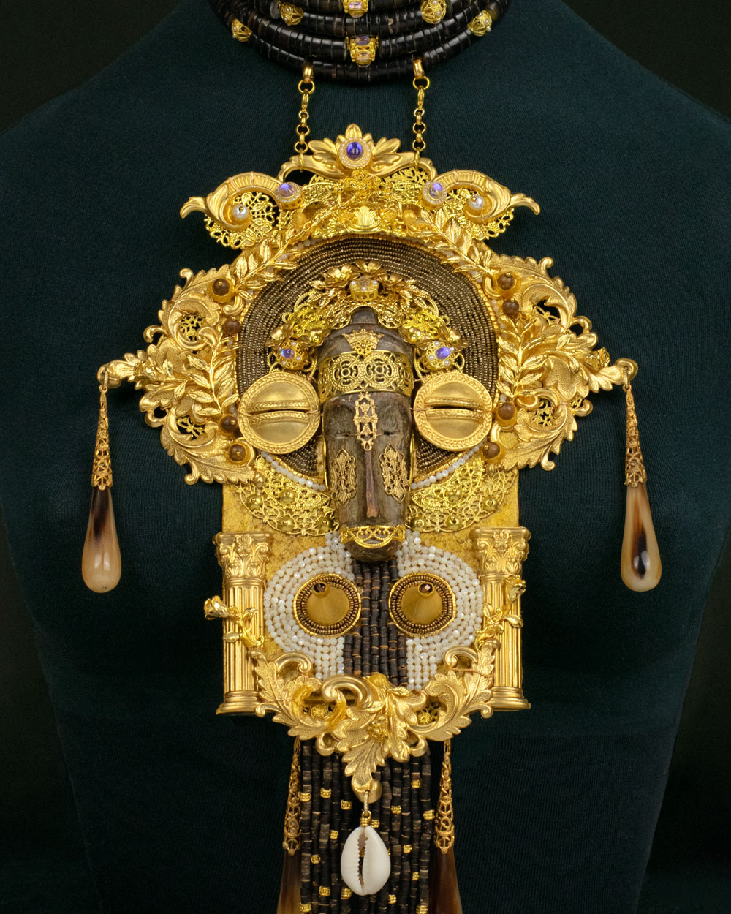

Influenced by Orthodox Baroque and African Sacred Art Reliquary Plastron Necklace “Lacrimae Mundi — The Tears of the World”
Faith wears many faces. Suffering speaks a single language.
Stylized sculptural necklace · One of a Kind · Paris 2026
The artwork consists of two interconnected elements:
A dramatic choker-corset embracing the throat, inspired by the iconic neck adornments of the Kayan women. It transforms the neck into a sacred architectural space, where the body itself becomes a reliquary.
An oversized pectoral plastron pendant, drawing inspiration from Byzantine and Orthodox reliquaries and devotional icons, fused with the visual language of African ceremonial masks and ritual objects.
Together, these elements create a sculptural composition where sacred traditions converge into a single contemporary form.
Measurements:
Plastron Pendant: W=20 cm, H=35 cm
Choker-corset for the throat: Adjustable L 35-37 cm, H=6 cm
Techniques used: Mixed media
Description of materials:
Hand-carved African wooden mask, brass stampings, gold-tone filigree components, freshwater pearls, genuine horn elements, cowrie shell, various seed, wooden and glass beads. 24k matt gold plated findings: beads, spacer beads. Other mixed metal findings.